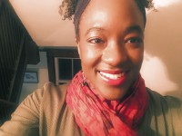

My name is Amanda Vaccianna. I was born and raised on the island of Jamaica. I moved to Canada in 2007 to pursue a specialized high school certificate. I decided to stay in Canada after graduation and completed an undergraduate degree - Bachelor of Arts, University of Toronto. Years later, I'm still here!
People are often surprised to learn I moved to Canada alone and the decision was as much mine as my parents' decision. I've long been used to independence due to being an only child. I enjoy both 'Arts' and 'Sciences'. I love drawing, painting, reading and enjoying music during my leisure time. However, I prefer data, equations and logic-based projects when I'm working. Working in full-stack development is the perfect place for me because front-end projects call on my creative side, while back-end projects keep me sharp. Language learning is another favourite field of mine for these reasons.